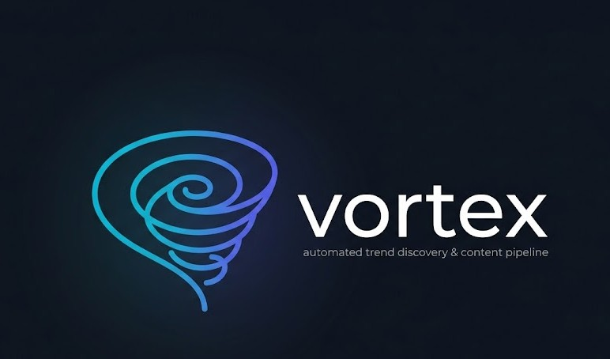

Inteligência de tendências em tempo realA esteira inteligente que transforma o caos das discussões da internet em uma linha de produção previsível e automatizada de roteiros altamente engajantes.
O Vortex monitora o que as pessoas estão falando nas redes sociais — como YouTube e TikTok — em tempo real, para descobrir tendências de conteúdo antes de todo mundo e gerar roteiros automáticos.
O coração do Vortex é um fluxo de negócio em três estágios bem definidos.
O sistema puxa milhares de comentários e discussões das redes sociais e filtra tudo. O que é ruído ou repetição é descartado; o que é relevante é separado.
Durante a madrugada, o sistema analisa tudo o que foi separado e percebe se existe um novo assunto ganhando força. Quando muitas pessoas começam a falar sobre um nicho específico, o sistema "acorda", identifica esse novo grupo de interesse e dá um nome a ele.
Com a tendência validada, o motor de estratégia entra em ação e gera automaticamente o pacote completo para o criador de conteúdo.
Tudo o que a Fábrica de Conteúdo produz automaticamente a cada tendência.
O roteiro completo do vídeo, organizado e pronto para gravação.
A abertura pensada para prender a atenção do público logo nos primeiros segundos.
Ideias de títulos e thumbnails para maximizar cliques e alcance.
Um indicador de o quão "quente" está aquele assunto no momento.
O conteúdo chega enquanto a tendência ainda está no início da curva.
Do comentário bruto ao pacote final, sem trabalho manual no caminho.
Em resumo, o Vortex transforma o caos das discussões da internet em uma linha de produção previsível e automatizada de roteiros altamente engajantes — garantindo que você poste sempre sobre o assunto certo, no momento certo.